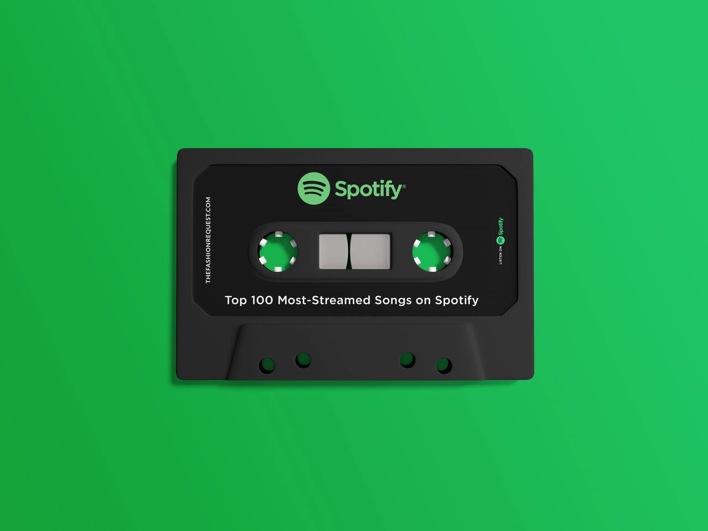
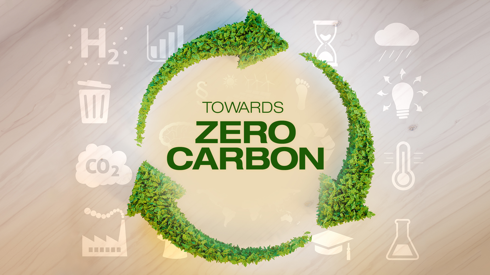

Here you will find examples of my work and projects I have worked on. Advices and suggestions for future projects and improvements on projects below will be highly appreciated, Thank you!
Instruction: After reading the description, click on the project title or image to go to the project

Overview:
Delve into the heartbeat of music trends with a comprehensive analysis and visualization of the top-streamed 2023 Spotify songs. This project harnesses the power of data amalgamation and compelling visualization through an Advanced End-To-End Power BI report.
Tools Utilized:
1. PowerPoint: Set the stage with an immersive report background, providing a narrative that contextualizes the data and its implications.
2. Bravo (Date Management): Efficiently managed and synchronized dates, ensuring accuracy and relevance in the analysis.
3. HTML: Customized elements to enhance user experience, offering interactive and dynamic features within the report.
4. DENEB (Vega & Vega-Lite): Leveraged for creating sophisticated visualizations, translating data insights into captivating, informative graphics.
5. Power BI & DAX: The backbone of the project, used to build the comprehensive report and employ Data Analysis Expressions for complex calculations and measures.
Key Features:
1. Top 2023 Spotify Songs Analysis: Unveiling the most streamed songs, dissecting patterns, and highlighting the factors contributing to their success.
2. Interactive Visualizations: Engaging and dynamic charts, graphs, and infographics presenting trends, comparisons, and correlations within the dataset.
3. In-depth Insights: Through the power of DAX, the report dives deep into song popularity metrics, user behaviours, and trends over time.
Unique Value:
This project not only offers a detailed glimpse into the musical landscape of 2023 but also demonstrates the fusion of diverse tools and technologies to craft an all-encompassing, interactive report. The amalgamation of Power BI, DAX, HTML, and specialized visualization tools like DENEB elevates the understanding of streaming data in a way that is both informative and visually stimulating.
Outcomes and Impact:
The insights derived from this project pave the way for music industry professionals, analysts, and enthusiasts to understand audience preferences, trends, and the dynamics of hit songs. Moreover, it serves as a testament to the power of innovative tools in creating impactful, data-driven narratives.
Conclusion:
The Advanced End-To-End Power BI report on the top 2023 Spotify songs stands as a testament to the fusion of technology, data, and storytelling. It is not just an analysis but an immersive experience that unravels the pulse of the music industry.
Github Repo: here
Dashboard: here

Description
In this engaging portfolio project, I assumed the role of a Business Intelligence Consultant, embarking on a mission to unlock the potential hidden within a local pizza restaurant's treasure trove of data. The objective was clear: to harness the power of data analytics and provide actionable insights that would propel the restaurant's operational efficiency to new heights.
The restaurant had diligently collected data over the course of a year, and my task was to transform this raw information into a strategic advantage. To address their pressing concerns and queries, I delved into the data, extracted meaningful patterns, and created a comprehensive dashboard to present my findings.
Here were the pivotal questions that guided my analysis:
1. Identifying Peak Times: I set out to determine the restaurant's busiest days and peak hours. Unearthing this information would enable the establishment to optimize staffing and resources during high-demand periods, ultimately enhancing customer service.
2. Quantifying Pizza Production: During the peak hours, I meticulously calculated the number of pizzas produced. Understanding the production capacity during busy times would assist in maintaining quality standards and minimizing wait times.
3. Pizza Sales Insights: The restaurant was eager to identify their top-selling pizzas and those that were less popular. By analyzing sales data, I pinpointed the stars of the menu as well as areas for potential improvement.
4. Average Order Cost: Financial insights were a crucial part of the analysis. I determined the average cost of an order, shedding light on customer spending habits and potential opportunities for upselling.
5. Seating Efficiency: Finally, I examined the utilization of the restaurant's seating capacity. By assessing the best and worst-selling hours in conjunction with seating data, I offered insights into whether the restaurant was making the most of its available space.
To present these insights effectively, I designed a user-friendly dashboard that comprises three distinct sections:
1. Orders Overview: This section provides a comprehensive view of the restaurant's activity throughout the year. It highlights the busiest quarters, months, days, and hours, giving a clear picture of when demand peaks.
2. Pizza and Categories: Here, I presented data on the top-selling pizza categories and identified both the restaurant's highest and lowest performing pizzas. This information empowers the restaurant to make informed decisions about their menu offerings.
3. Seating Utilization and Operational Hours: The third section delves into the correlation between sales trends and seating capacity. It enables the restaurant to assess the efficiency of its seating arrangements during different times, helping them optimize the customer dining experience.
In conclusion, this portfolio project showcases the journey of transforming raw data into actionable insights for a pizza restaurant. Through careful analysis and the creation of an intuitive dashboard, I empowered the restaurant to make informed decisions, streamline operations, and ultimately enhance their business performance. This project stands as a testament to the power of data-driven decision-making in the world of business intelligence.
Github Repo: here
Dashboard: here

Objective:
The #mavenenvironmentalchallenge by @Maven Analytics served as a platform for me to undertake a compelling exploration. I acted as an independent journalist and data visualization enthusiast, I embarked on a captivating journey to dissect Apple's exceptional commitment to combat climate change. Central to this endeavor was Apple's visionary goal of achieving carbon neutrality by 2030, not just within their corporate operations but extending this ambition to encompass their products.
The Challenge:
Apple's pledge in 2020 to achieve carbon neutrality stands as a testament to their dedication. Setting the emissions baseline at 38.4 million metric tons of CO2e in 2015, the challenge they've laid out is monumental - a remarkable 75% reduction by 2030. Equally impressive is their plan to address the remaining 25% of gross emissions (9.6 million metric tons of CO2e) through carbon offsets, ultimately driving their net emissions to zero.
Visualizing Progress:
Driven by my passion for data and narrative, I delved deep into Apple's Environmental Progress Reports to visualize their extraordinary journey. Tracking their trajectory over the past seven years and projecting their path for the next eight, my aim was to illustrate their strides toward carbon neutrality. Leveraging Power BI, I employed DAX functions to compute the compound annual growth rate (CAGR) for crucial metrics, providing a comprehensive visual representation of their progress.
Outcome:
The project stands as a testament to Apple's commitment and progress toward carbon neutrality. Through engaging and informative visualizations, it highlights the strides made, challenges faced, and the projected future as Apple forges ahead on its journey to mitigate climate impact.
Key Tools Used:
1. Power BI for comprehensive data analysis and visualization.
2. DAX functions for calculating compound annual growth rates (CAGR) and other key metrics.
Conclusion:
Visualizing Apple's ambitious roadmap towards carbon neutrality by 2030 showcases not only the company's commitment but also the power of data visualization in conveying complex environmental initiatives. This project encapsulates the crucial steps taken and the path ahead as Apple remains steadfast in its pursuit of a sustainable future.
Github Repo: here
Dashboard: here

In this project I have analysed the job descriptions of vacant junior data analyst job Opportunities in South Africa. The dataset was scrapped in Python from indeed website using BeautifulSoup and Selenium, it was exported to an excel file, and later analysed using Python. Only two (2) programs (Python and Excel) were used throughout the project.
Click here to go to the project repository.
{kind=link}